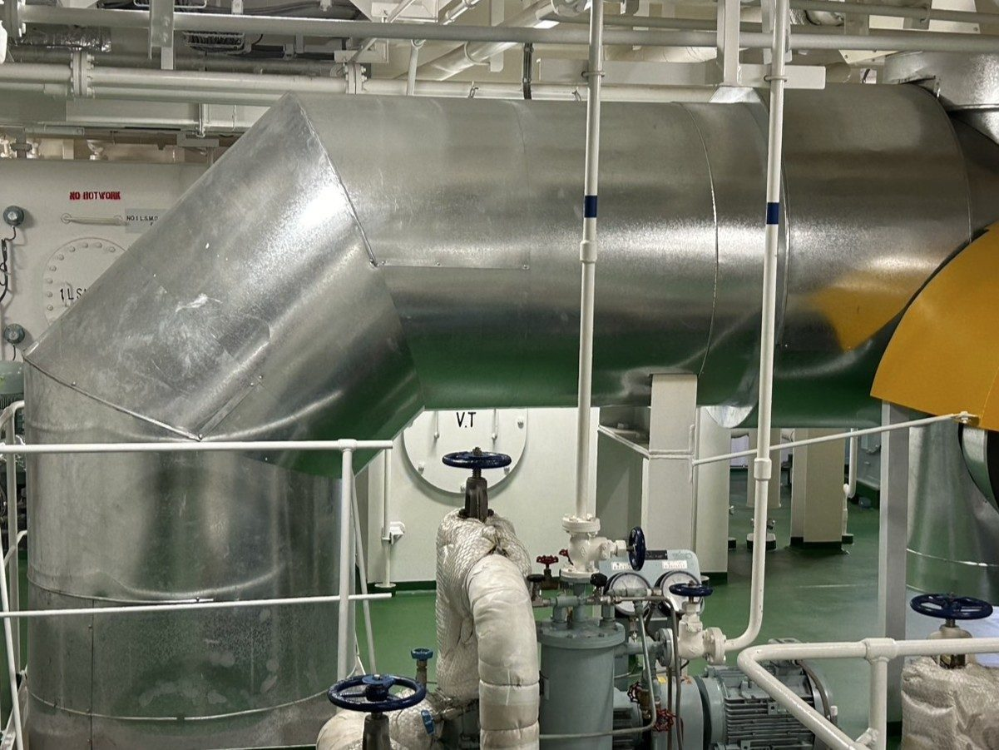
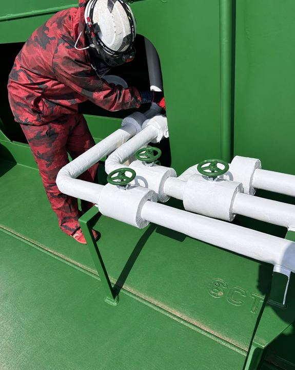
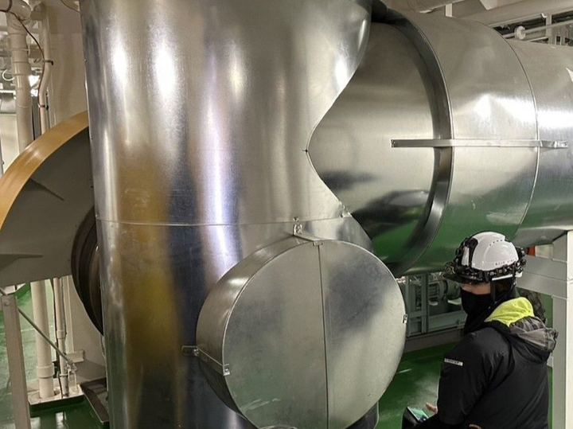

断熱・保温・保冷と、
それを仕上げる板金を。
船舶や設備の断熱、配管・設備の保温・保冷と、その外装となる板金の加工・施工を行っています。作図から加工、現場での取付まで、長崎市鳴見町の自社加工場を拠点に対応します。
- 設立2019年 1月9日
- 拠点長崎市鳴見町
- 自社加工場板金・断熱材を加工
- パックエルボ30°/45°/67.5°/90°
STRENGTH
RN板金工業の強み
ONE TEAM
保温材の施工と、外側の板金を一社で
断熱・保温・保冷の施工と、その外側を覆う板金(ラッキング)の両方を担当しています。
CAD TO SITE
作図から現場取付まで
板金の形状をCADで作図し、加工・組立を経て現場で取り付けます。角度や呼び径、防熱厚に合わせて形を起こします。
OWN WORKSHOP
自社の加工場
事務所1階が板金と断熱材の加工場です。現場で使う部材の加工・組立をここで行っています。

WORKS
施工実績
施工実績は1件ずつ詳細ページでご覧いただけます。工事の種類から探すこともできます。


CONTACT
工事のご相談・お問い合わせ
断熱・保温・保冷や板金のご相談を受け付けています。工事の内容と場所、時期が分かれば、まずはそれだけでご連絡ください。